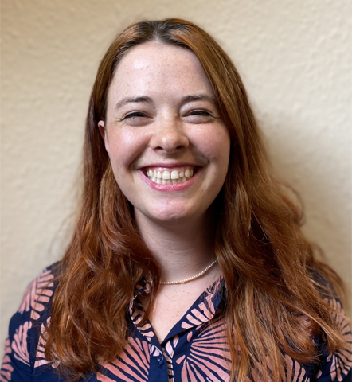

About this project
This is a Critical Code Studies reading of Spacewar!, the space-combat game written for the DEC PDP-1 at MIT in 1961–62, read as a cultural text: at once literature, mechanism, spatial form, and a record of the social world that produced it.
David M. Berry
David’s current work develops a notion of what he calls vector theory, an account of how artificial intelligence, organised around learned high-dimensional geometries (the manifold), is reshaping the production of knowledge, the conditions of culture, and the political economy of computation. He works across the philosophy of technology, critical theory, critical code studies, and the digital humanities, with a particular interest in how the theories and methods developed for older media now need to be rethought.

Mark C. Marino

Anthony Hay
Wrote a near-perfect clone of the original MAD-SLIP ELIZA in C++, first from Weizenbaum’s 1966 paper, later corrected against the recovered MIT source. Untangled the “certain counting mechanism” behind ELIZA’s memory.
Sarah Ciston
Builds critical-creative tools to bring intersectional approaches to machine learning. Winner of the 2025 Ars Electronica STARTS Grand Prize. Author of A Critical Field Guide to Working with Machine Learning Datasets and founder of Code Collective.

Art Schwarz
Developed gSlip, a public-domain implementation of SLIP, the list-processing library underpinning ELIZA. Interests include hashing algorithms and anomaly detection.

Claire Carroll
Interested in the aesthetics of interactive fiction (IF) and how they might connect to broader digital behaviours. More specifically, she’s exploring how the normalised usages of the second person voice and the present tense in IF create slippage for players’ immersion as they are simultaneously readers and characters, thus balancing and bouncing between extra/diegetic modes of engagement. Her research methodologies include actor-network theory, disability studies, critical code studies, and new media theory.
Norbert Landsteiner
Software archaeologist whose browser-based reconstructions of historic systems include the definitive emulation of Spacewar! running on the PDP-1. His restorations and technical notes on the original code inform this project throughout.
The source and emulator preserved in this project descend from the canonical PDP-1 emulator by Barry Silverman, Brian Silverman and Vadim Gerasimov. The reading draws throughout on the reconstructions and software-archaeological work of Norbert Landsteiner. Source and issues: github.com/spacewar1962.